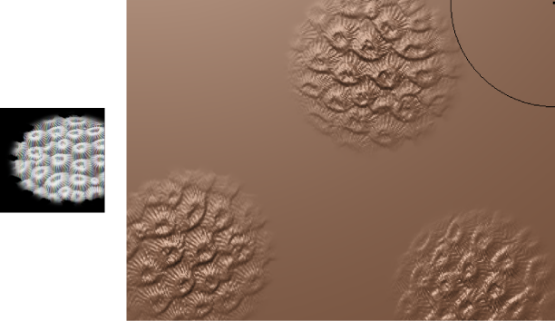

以下部分介绍了在雕刻时应用图章的两种方法。
使用重复的图章图像进行雕刻
- 在“雕刻”(Sculpting)工具架中，双击雕刻工具图标。
- 在显示的“工具设置”(Tool Settings)窗口中，展开“图章”(Stamp)部分。
- 执行下列操作之一：
图章图像将显示在“工具设置”(Tool Settings)中，“使用图章”(Use Stamp)处于启用状态。
- 在场景中，在模型上绘制笔划以应用图章细节。
绘制笔划时，将沿笔划自动应用和重复图章细节。为了使各个图章之间的空间更大，请增大“工具设置”(Tool Settings)窗口中的“间距”(Spacing)设置。
注： 根据图像中白色所占的量，图章图像可以降低雕刻工具的强度。图像中的白色值置换具有完全强度的顶点，而黑色值则根本不进行置换。如果图章图像具有大量灰色色调，则在使用图章时可能需要通过增大工具的“强度”(Strength)设置来进行补偿。
使用“盖印”(Imprint)工具雕刻重复的图章图像
- 在“雕刻”(Sculpting)工具架中，双击“盖印”(Imprint)工具。
- 在显示的“工具设置”(Tool Settings)窗口的“图章”(Stamp)部分中，执行以下操作：
- 拾取图章。
- 将“绘制方法”(Draw Method)设置为“连续”(Continuous)。
- 在模型上拖动以沿笔划路径应用重复的图章图像。
雕刻单个图章
使用“盖印”(Imprint)工具，可以将图章图像的单个实例应用于模型。在应用凸起或凹陷特征（如按钮或徽标）时，盖印很有用。在将盖印的图章图像应用于模型时，可以对其进行缩放。

使用“盖印”(Imprint)工具雕刻单个图章
- 在“雕刻”(Sculpting)工具架中，双击“盖印”(Imprint)工具。
- 在显示的“工具设置”(Tool Settings)窗口的“图章”(Stamp)部分中，拾取图章或导入自定义图章图像。·
- 在模型上拖动以应用图章细节。
拖动时，图章图像将显示出来并从您单击的位置缩放或旋转。图像将作为单个图章在该区域中立即应用。
注： 从“绘制方法”(Draw Method)下拉列表中选择一个选项，即“从中心缩放图像”(Scale image from center)或“从一侧缩放图像”(Scale image from side)。